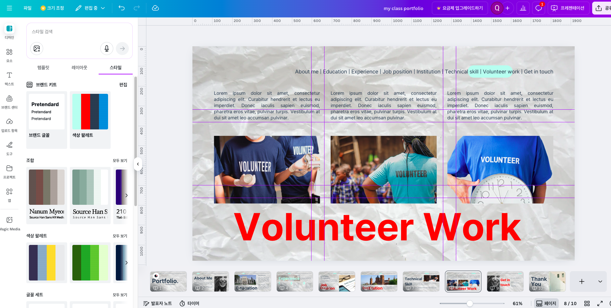

4강에서 완성한 전략 기획 산출물(Docs·Sheets·Slides)을 Canva와 LLM을 활용해 취업 포트폴리오로 시각화합니다. 단일 콘텐츠 담당자 관점에서 디자인·설명력·제출까지 완성하는 2시간 실습입니다.

🎯 학습 목표
- Canva의 기본/AI 기능을 조합해 포트폴리오 레이아웃을 완성한다.
- ChatGPT·Gemini로 설명 문구를 생성·개선하고 프롬프트 튜닝 기법을 익힌다.
- AI 이미지 편집(증명사진 리터치)과 문서 분석 기능으로 설명 정확도를 높인다.
- 4강 Notion 프로젝트 보드에 최종 산출물을 등록하고 담당 교수님께 제출한다.
실습 흐름
단계 | 도구 | 활동 | 산출물 | 담당자 |
1. 환경 준비 | Canva, Notion | 4강 프로젝트 보드 확인, 5강 Task 등록 | 5강 Task 목록 | 콘텐츠 담당자 |
2. Canva 기본 기능 | Canva | 템플릿·브랜드 키트·레이아웃 가이드 실습 | 브랜드 프리셋 | 콘텐츠 담당자 |
3. 섹션 구성 | Canva | 4페이지 레이아웃, 4강 Docs·Sheets 임베드 | 와이어프레임 | 콘텐츠 담당자 |
4. 프로필 사진 리터치 | Gemini / Qwen | 비정장 사진 → 정장 톤 보정 | 프로필 이미지 PNG | 콘텐츠 담당자 |
5. 소개문 작성 | ChatGPT / Gemini | 150자 소개문 초안 생성 | 소개문 초안 | 콘텐츠 담당자 |
6. 프롬프트 튜닝 | ChatGPT / Gemini | 톤 변환·시적 표현·간결화 | 톤별 소개문 3종 | 콘텐츠 담당자 |
7. 근거 기반 설명 | ChatGPT Vision / Gemini | 기획서·코드 분석 → 프로젝트 설명 | 프로젝트 설명문 | 콘텐츠 담당자 |
8. AI 기능 결합 | Canva | Magic Write, Magic Media, 번역 | AI 적용 버전 | 콘텐츠 담당자 |
9. 최종 조립 | Canva, Notion | PDF 다운로드, Notion 등록 | 포트폴리오 PDF | 콘텐츠 담당자 |
10. 제출 | Notion | 품질 점검, 교수님 제출 | Notion 공유 URL | 콘텐츠 담당자 |
준비 체크리스트
- ✅ Canva 계정 로그인하고
홈 → 프로젝트에서5강_포트폴리오폴더를 만든다. - ✅ Chrome에 Canva, Gemini, ChatGPT 탭을 고정한다.
- ✅ 4강에서 생성한 Notion
프로젝트 보드페이지를 열고 공유 링크를 확인한다. - ✅ 로컬 컴퓨터에 비정장 프로필 사진(정장 없이 촬영된 사진)을 준비한다.
5강 Task 등록
- Notion
프로젝트 보드에서+ 새 프로젝트를 클릭하고 이름을5강 - 취업 포트폴리오 제작으로 입력한다. Task Tracker에서+ 새 행을 눌러 아래 Task를 등록한다.
Task 이름 | 상태 | 담당자 | 마감일 |
Canva 기본 기능 실습 | 시작전 | 콘텐츠 담당자 | 오늘 |
포트폴리오 섹션 구성 | 시작전 | 콘텐츠 담당자 | 오늘 |
프로필 사진 리터치 | 시작전 | 콘텐츠 담당자 | 오늘 |
소개문 작성 & 튜닝 | 시작전 | 콘텐츠 담당자 | 오늘 |
프로젝트 설명 강화 | 시작전 | 콘텐츠 담당자 | 오늘 |
최종 조립 & 제출 | 시작전 | 콘텐츠 담당자 | 오늘 |
프로젝트 보드에서5강 - 취업 포트폴리오 제작행을 클릭하고Task Tracker와 Relation을 맺는다.
성과물
- 5강 Task가 등록된 Notion 프로젝트 보드 스크린샷
<보완필요: Notion 프로젝트 보드에 5강 Task가 등록된 화면 캡처>

실습 절차
- ✅ Canva 홈에서
디자인 만들기 → 프레젠테이션 (1920×1080)을 선택한다. - ✅ 왼쪽
템플릿패널에서포트폴리오를 검색하고스타일필터로미니멀,모던,크리에이티브중 하나를 선택한다.- 추천 템플릿: "Modern Portfolio", "Creative Resume", "Professional Portfolio"
- ✅ 마음에 드는 템플릿을 클릭하고
템플릿 사용을 눌러 복제한다. - ✅ 상단
디자인 → 브랜드 키트를 열고브랜드 색상에 본인의 대표 색상 3개를 등록한다.- 예: 주색상(#2C3E50), 보조색상(#3498DB), 강조색상(#E74C3C)
- ✅
브랜드 폰트에서Pretendard,Noto Sans KR,Roboto중 하나를 선택한다.
- ✅ 캔버스 상단
파일 → 설정 → 눈금자 및 가이드 표시를 체크하고, 그 아래가이드 추가를 클릭해 그리드·안전 영역을 활성화한다.
성과물
- 브랜드 컬러·폰트가 적용된 Canva 템플릿 복제본
- Task Tracker에서
Canva 기본 기능 실습상태를완료로 변경

- ✅
페이지 추가를 클릭해 총 4페이지를 구성한다.- 페이지 1: 인트로 (프로필 사진 + 소개문)
- 페이지 2: 역량 (4강 Docs 기획 문서 요약)
- 페이지 3: 성과 (4강 Sheets KPI 차트)
- 페이지 4: 컨택 포인트 (이메일, GitHub, LinkedIn)
- ✅ 각 페이지에서
스타일 → 모든 페이지에 적용을 클릭해 브랜드 컬러·폰트를 일괄 적용한다. - ✅ 페이지 2에서
요소 → 선 & 모양 → 프레임을 드래그해 4강 Docs 링크를 임베드한다.- 4강 Docs 링크를 복사하고 Canva 프레임에 붙여넣는다.
임베드 → 링크 미리보기를 선택해 문서 썸네일을 표시한다.
- ✅ 페이지 3에서
앱 → Google Drive → 연결을 클릭하고 4강 Sheets를 선택한다.삽입 → 차트 → 시트에서를 클릭하고 KPI 차트를 가져온다.- 차트 크기를 조정하고
사용자 지정 → 범례에서 글씨체를 브랜드 폰트로 변경한다.
- ✅ 페이지 4에서
텍스트 → 본문 추가를 클릭하고 이메일·GitHub·LinkedIn 링크를 입력한다.
실습 팁
Command + Shift + K(macOS) 또는Ctrl + Shift + K(Windows)로 선택 요소들을자동정렬하면 섹션 간 여백이 일정해진다.주석기능(C키)을 활용해 나중에 교정할 곳(예: 숫자 업데이트)을 메모해둔다.
성과물
- 4페이지 와이어프레임 PNG Export (
파일 → 다운로드 → PNG) 버전 기록에20250109_Layout명명- Task Tracker에서
포트폴리오 섹션 구성상태를완료로 변경
<보완필요: Canva 4페이지 레이아웃 와이어프레임 캡처>

실습 절차
- ✅ 로컬 컴퓨터에서 비정장 프로필 사진을 준비한다.
- ✅ Gemini Advanced를 열고
이미지 업로드를 클릭해 사진을 업로드한다.- Qwen Image Edit를 사용하려면 Qwen 공식 사이트에서 Image Edit 모델을 선택한다.
- ✅ 아래 프롬프트를 입력해 포트폴리오용 증명사진을 생성한다.
정장 없이 촬영한 이 사진을 취업 포트폴리오용으로 보정해줘.
- 남색/진회색 재킷을 입힌 것처럼 보이게 하고
- 자연스러운 단색 배경(밝은 회색)을 적용해줘.
- 목 부분에는 얇은 V넥 니트를 자연스럽게 유지해, 넥타이는 추가하지 말아줘.
- ✅ 추가 개선이 필요하면 다음 후속 프롬프트를 사용한다.
턱선과 어깨선을 약간 또렷하게 강조하고, 피부 톤은 자연광에서 촬영한 것처럼 보정해줘.
과도한 뷰티 필터 효과는 제거하고, 사진 전체 밝기는 10%만 올려줘.
- ✅ 결과물을 PNG로 다운로드하고
포트폴리오_프로필_20250109.png로 저장한다. - ✅ Canva 페이지 1(인트로)에서
업로드 → 파일 업로드를 클릭하고 리터치한 프로필 사진을 추가한다. - ✅ 프로필 사진을 프레임에 맞춰 삽입한 뒤
사진 편집 → 그림자로 입체감을 준다.
성과물
- 보정된 프로필 사진 PNG
- Canva 페이지 1에 적용 완료
- Task Tracker에서
프로필 사진 리터치상태를완료로 변경
<보완필요: Gemini/Qwen 리터치 전후 비교 이미지>

대상: 경영학 전공 3학년, AI 서비스 기획 직무 지원자.
목표: Canva 포트폴리오 첫 페이지에 들어갈 150자 내외 소개문 작성.
조건: 핵심 역량 3개(데이터 분석, 사용성 검증, 팀 협업)와 4강 프로젝트 성과(KPI 개선 25%)를 포함해줘.
톤: 신뢰감 있고 간결하게.
- ✅ 출력된 결과를 복사해 Grammarly 등으로 일차 교정한다.
- ✅ Canva 페이지 1에서
텍스트 → 본문 추가를 클릭하고 소개문을 붙여넣는다. - ✅ 서체를
Pretendard / 14pt로 변경하고 브랜드 컬러를 적용한다.
성과물
- 소개문 초안 (150자 내외)
- Canva 페이지 1에 텍스트 블록 적용 완료
- ✅ ChatGPT/Gemini에서 아래 프롬프트를 입력해 톤을 변환한다.
방금 작성한 소개문을 더 따뜻한 어조로 바꿔줘.
- 주요 성과 수치는 유지
- 문장 길이는 평균 22자로 조정
- 끝맺음을 지원 직무에 대한 확신으로 마무리
- ✅ 시적 표현을 추가하는 프롬프트로 반복 실습한다.
이번에는 같은 내용을 3문장으로 요약하되,
- 첫 문장은 인상적인 비유
- 두 번째 문장은 구체적 성과
- 세 번째 문장은 앞으로의 포부
로 구성해줘.
- ✅ 간결 버전을 만들고 싶다면 다음을 사용한다.
동일한 소개문을 90자 이내, 레쥬메에 어울리는 건조한 어조로 작성해줘.
중요 수치는 유지하고 접속사는 최소화해.
- ✅ 3가지 버전(따뜻한 어조, 시적 표현, 간결 버전)을 Notion
포트폴리오 재료페이지에 기록한다. - ✅ Canva 페이지 1에 최종 선택한 소개문을 적용한다.
성과물
- 톤별 소개문 3종
- Notion
포트폴리오 재료페이지에 문체 선택 이유 기록 - Task Tracker에서
소개문 작성 & 튜닝상태를완료로 변경
<보완필요: ChatGPT 프롬프트 튜닝 전후 비교 스크린샷>
- ✅ ChatGPT Vision 또는 Gemini Advanced를 열고 다음 중 하나를 업로드한다.
- Canva 초안 PDF
- 4강 프로젝트 기획서 (Google Docs PDF)
- GitHub 코드 ZIP (있을 경우)
- ✅ 다음 프롬프트로 근거 기반 설명을 생성한다.
업로드한 문서를 기반으로, 포트폴리오 '프로젝트 소개' 섹션에 넣을 5문장 설명을 작성해줘.
- 각 문장은 [결과 : 사용 도구 : 나의 기여] 구조를 따라 작성
- 문장마다 문서에서 찾은 구체적 근거(숫자, 기능명)를 괄호 안에 표기
- 마무리 문장은 다음 확장 계획 제안
- ✅ 결과가 모호하면 후속 프롬프트를 입력한다.
세 번째 문장이 추상적이야. 업로드한 자료 중 Sheets KPI 값과 연계해 수치형 근거를 추가해줘.
- ✅ 출력 텍스트를 Canva 페이지 2에서
표또는리스트요소로 정리한다.요소 → 표 → 3×2를 선택해 표를 만든다.- 첫 번째 열에
결과, 두 번째 열에사용 도구, 세 번째 열에나의 기여를 입력한다. - LLM이 생성한 문장을 각 셀에 붙여넣는다.
성과물
- 근거가 각주로 표시된 프로젝트 설명문
- LLM 분석 과정 스크린샷 (Notion
포트폴리오 재료페이지에 업로드) - Task Tracker에서
프로젝트 설명 강화상태를완료로 변경
<보완필요: ChatGPT Vision/Gemini 문서 분석 결과 스크린샷>
- ✅ Canva 페이지 2에서
텍스트 → Magic Write를 클릭하고 슬라이드별 소제목을 자동 생성한다.- 예: "핵심 역량", "프로젝트 성과", "사용 도구"
- ✅
요소 → Magic Media → 이미지 편집을 클릭하고 포트폴리오 배경 그래픽을 AI로 생성한다.- 프롬프트 예: "미니멀한 기하학 패턴, 파란색 톤, 비즈니스 포트폴리오용"
- 생성된 이미지를 페이지 1 배경에 배치하고 투명도를 20%로 조정한다.
- ✅
앱 → 번역을 클릭하고 소개문을 영어·일본어 2개 언어로 자동 번역한다.- 번역된 텍스트를 페이지 4 하단에 추가한다.
- ✅
파일 → 버전 기록 → 현재 버전 이름 지정을 클릭하고20250109_AI-Enhanced로 저장한다.
성과물
- AI 적용 버전의 Canva 링크
- 생성된 배경 그래픽/다국어 페이지
<보완필요: Canva Magic Write/Magic Media 실행 화면 캡처>

- ✅ Canva 우측 상단
공유 → 링크 있는 모든 사용자 → 보기 가능으로 설정하고 URL을 복사한다. - ✅
다운로드 → PDF 표준을 선택해portfolio_ai_20250109.pdf로 저장한다. - ✅ Notion
프로젝트 보드에서5강 - 취업 포트폴리오 제작행을 클릭하고Attach file속성에 Canva 링크와 PDF 파일을 업로드한다. - ✅
완료 시각속성에 현재 날짜·시간을 입력하고상태를완료로 변경한다.
성과물
- 디지털 포트폴리오 PDF
- Canva 공유 링크 (Notion·지원 채널용)
- Task Tracker에서
최종 조립 & 제출상태를완료로 변경
<보완필요: Notion 프로젝트 보드에 Canva 링크·PDF가 등록된 화면 캡처>
- ✅ 소개문·프로젝트 설명에서 사용한 수치와 4강 KPI 값이 일치하는지 검토한다.
- ✅ 리터치한 프로필 사진에 과도한 보정 흔적이 없는지, 윤리 지침을 준수했는지 확인한다.
- ✅ Canva에서
파일 → 미리보기 → 모바일을 열어 가독성을 확인한다. - ✅ LLM 생성 문장을 Grammarly 등으로 최종 교정한다.
- ✅ Notion
프로젝트 보드공유 링크를 복사하고 담당 교수님께 이메일로 전달한다.- 제목:
[5강 제출] 취업 포트폴리오 완성본 - 이름 - 본문: Notion 공유 URL + Canva 링크 + PDF 첨부
- 제목:
성과물
- 품질 점검 완료 체크리스트
- 담당 교수님께 제출 완료 이메일 스크린샷
<보완필요: 교수님께 제출하는 이메일 템플릿 예시>
- 포트폴리오에 30초 분량
Canva → 비디오버전을 추가 제작해 소셜용으로 공유 - Gemini로 프로젝트 산출물 요약 인포그래픽을 생성해 마지막 페이지에 삽입
- ChatGPT로 예상 면접 Q&A 카드를 작성하고 Canva로 카드 템플릿을 제작
확장 미션은 선택 과제로, 제출 시 별도 피드백을 받을 수 있습니다.